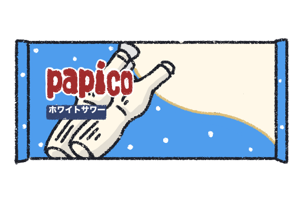
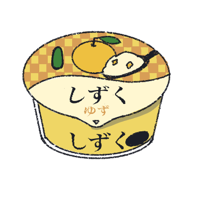
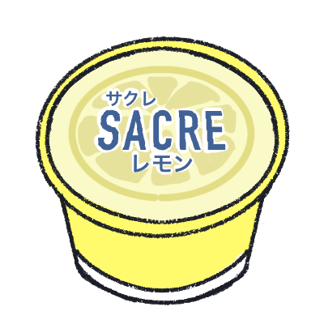

アイスボックス
レモン味の氷で、サッパリとする。
そのまま食べるも良し、ソーダを入れてジュースにしても良し。色んな楽しみ方ができる!

papico ホワイトサワー
とにかくさっぱりしていて、爽やかなカルピス味という印象。
氷感が強いアイス本体と味がマッチする。二人で分けてもよし、二日に分けてもよし、１日に2本食べるのもまたよし。

しずく ゆず
アイスの密度が非常に高く、満足感が高いが味がさっぱりしているのであっという間になくなってしまう。
ゆずのピールが入っているが、にがさは感じない。

SACRE レモン
レモン味のさっぱりとした味わいに加え本物のスライスレモンが入っているところが魅力！
清涼感が素晴らしく熱い日にぴったり！